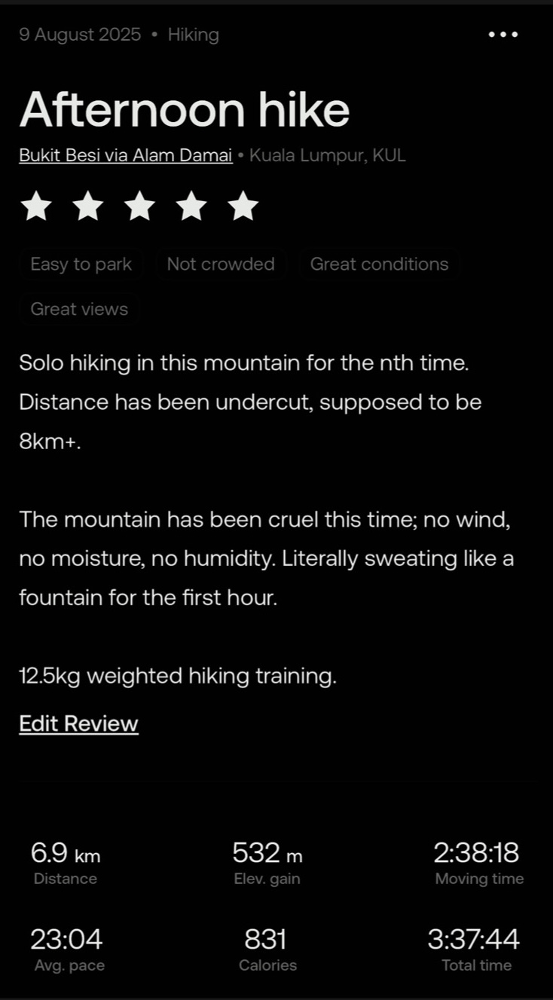
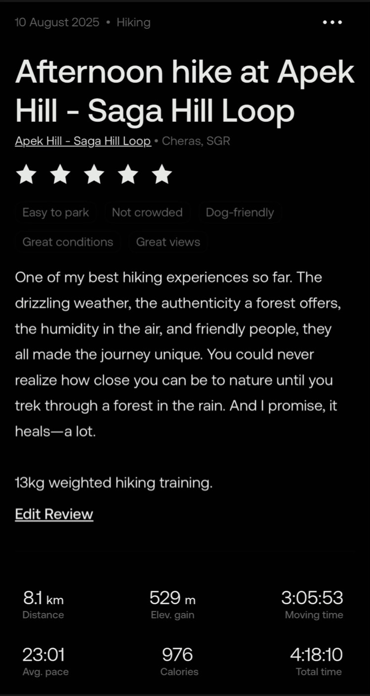
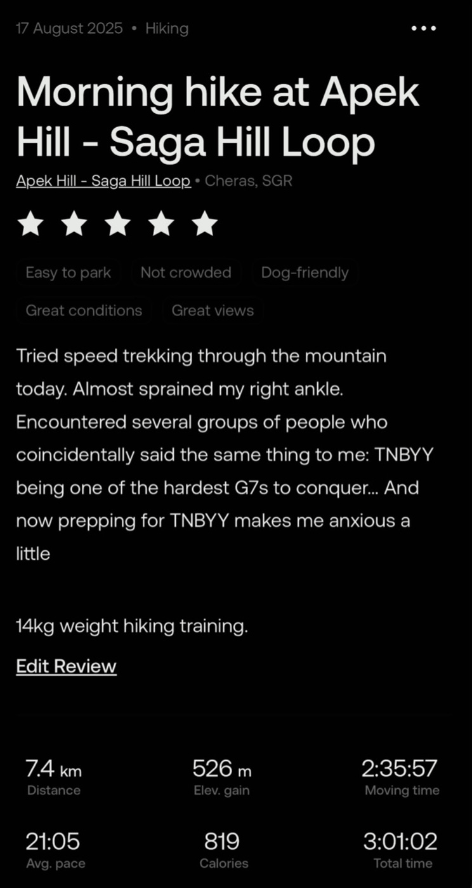

TNBYY (Tok Nenek – Bubu – Yong Yap) - My First G7 Camphike
written on 11 September 2025
Mount Tok Nenek - Mount Bubu - Mount Yong Yap. Hence the name TNBYY. Mount Yong Yap is known as one of the G7s, or the seven highest peaks in Peninsular Malaysia. If I had been asked months ago whether I could imagine myself reaching the peak of one of them, I would have said no.
Training to deserve the start
I was introduced by a friend to the TNBYY 3D2N camphike. I was nervous before the camp hike, as I was totally inexperienced in this. One month before TNBYY, I started training to earn my right to start.
Every weekend, I loaded 15kg into my pack and hiked the mountains around my neighborhood. It wasn’t pretty. Shoulders burned, steps were heavy, and breathing got hard. I was so afraid that my inability would hold the squad back.




Day 1 — Trekking in High Spirits
We reached the trailhead in a 4WD ride. The first half of the trail we trekked at a comfortable pace. We were all in high spirits, enjoying the authenticity the forest offered. Everything felt so new to me: the weight on my hips and shoulders, the soothing coolness on the skin, the way the forest led us through its paths.

By the evening, we reached Kem Berlumut, where we set up camp, prepared our meals, and refilled our water in the stream.

Day 2 — TNBYY in one breath
Waking up at 3am, we dismantled our tents and started our day at 4.30am. The plan was simple yet scary: all three peaks in a day—Tok Nenek, Bubu, Yong Yap. With all of them peaking at 2000m+ altitude, the journey asked for physical endurance and unwavering perseverance. Rocky cliffy trails, marvelous night sky with stars observable under bare eyes, Tok Nenek arrived after a two-hour conversation with the jungle.

They said Tok Nenek has the best view out of all three. I think that is an understatement. Tok Nenek has got the best view I have ever seen in a long while. An indescribably breathtaking summit view. The radiant golden glow of sunrise framed my silhouette. The strong gusts of wind at the peak turned my hot drink into something extra comforting. The unwavering and enthusiastic support from fellow hikers made the summit feel even more special.


The descent was followed by a mossy forest. It gave off a Wizard of Oz kind of vibe. I wouldn’t even doubt it if someone told me fairies lived there. We were accompanied by mosses and plants unique to the high altitude and cool, soothing air.


The second summit, Bubu, had much less to offer. Not much of a view. We stopped there for a lunch break before descending again and continuing toward our ultimate goal of the hike — Mount Yong Yap.

The effect of my inexperience in weighted hiking really started to hit me hard by then. Every step felt twice as heavy. My mind began to question why I was even doing this in the first place. The exhaustion, both mental and physical, was excruciating. My hip bones were in extreme pain, and all I could do was force my mind through the suffering.

We reached Simpang Y, where we could finally drop our backpacks and change into our lightweight summit packs. A huge relief off the shoulders, though brief. Elevation gain of hundreds of metres within less than an hour. Imagine how crazy it would be if we were to do this with our 15kg+ backpacks.

And after all the effort. G6 - Mount Yong Yap was finally reached. A short stop at the peak, and we had to trek for another three hours to reach our campsite for the second night.


The descent was no easier; we were so lethargic that we were almost dragging our feet. After 14 hours of hiking, we finally reached Kem Sungai Jeruk, our campsite for the second night. Setting up camps and preparing meals felt like heavy chores as we were so tired.

Day 3 — The long goodbye
No summits today—just the honest work of going home. Countless rivers to cross along the trail. The freezing cold stream water brought a refreshing sensation to the feet. Savoured the last bit of the forest before plunging back into the concrete jungle.


Gift from the jungle
I was nervous before this hike because I was unsure if I was cut out for this. The jungle answered with something better than confidence—honesty. Water with no filter needed. Air that fills my lungs with the purest of oxygen. Terrains that ask for my full attention and trust. I felt small, but never unwelcome.
For a first camphike, this was one of the best experiences of my life. Getting this close to the forest felt like meeting a part of myself I’d never met before. It felt like home.
I was so grateful for the people I met, and the memories will forever be engraved within me.


Thank you to nature, for embracing us. Till next time.